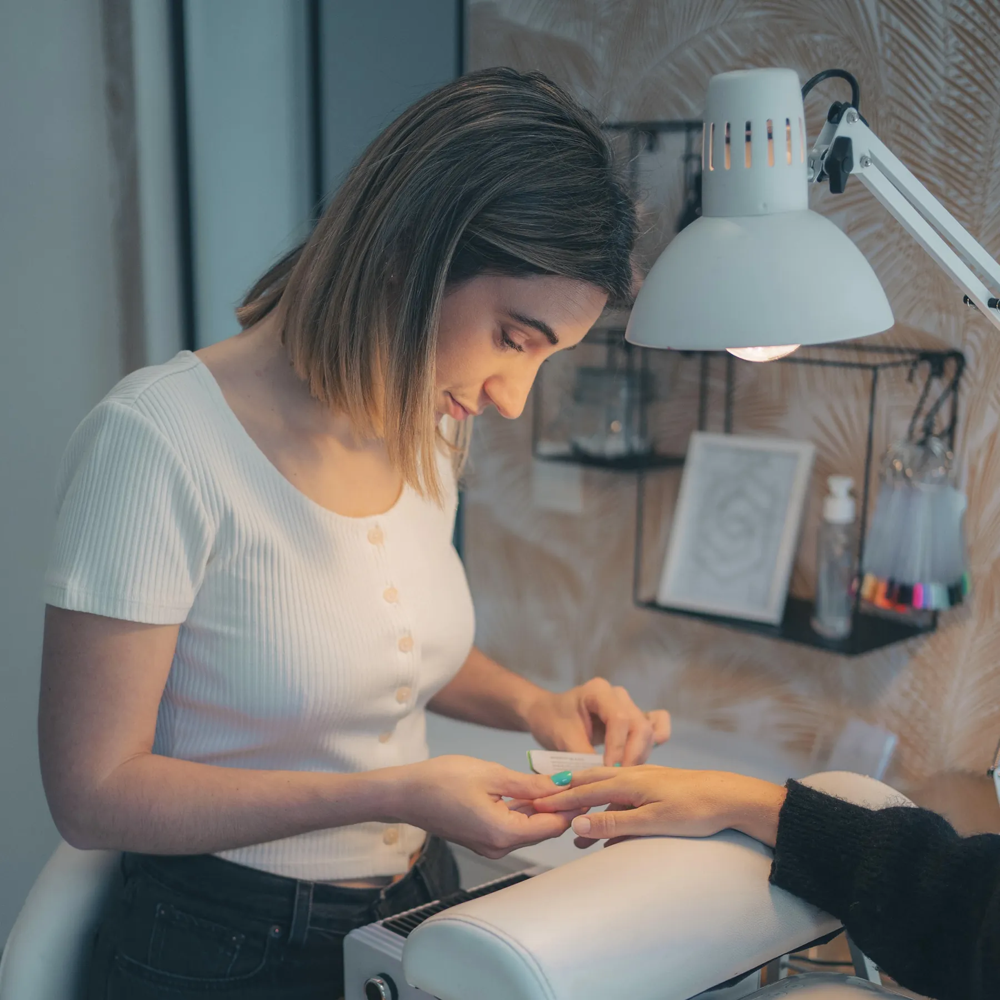
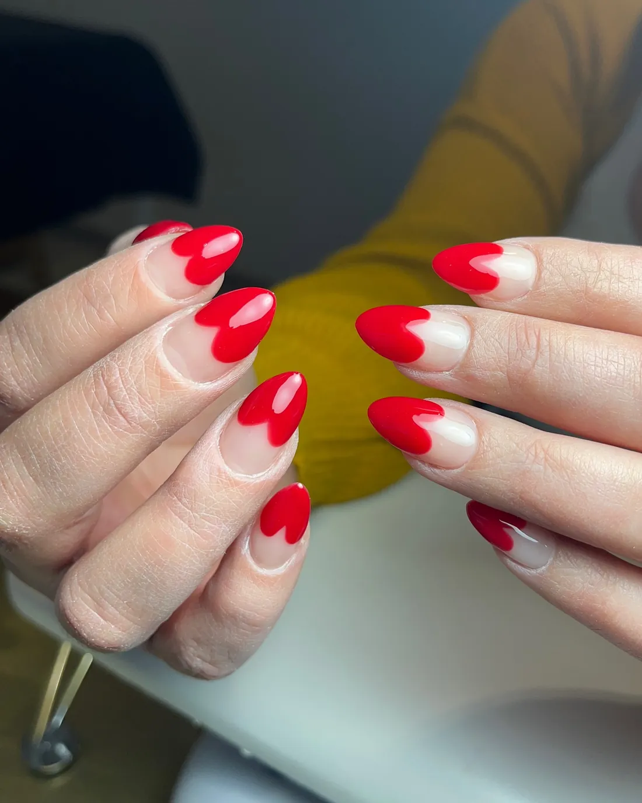
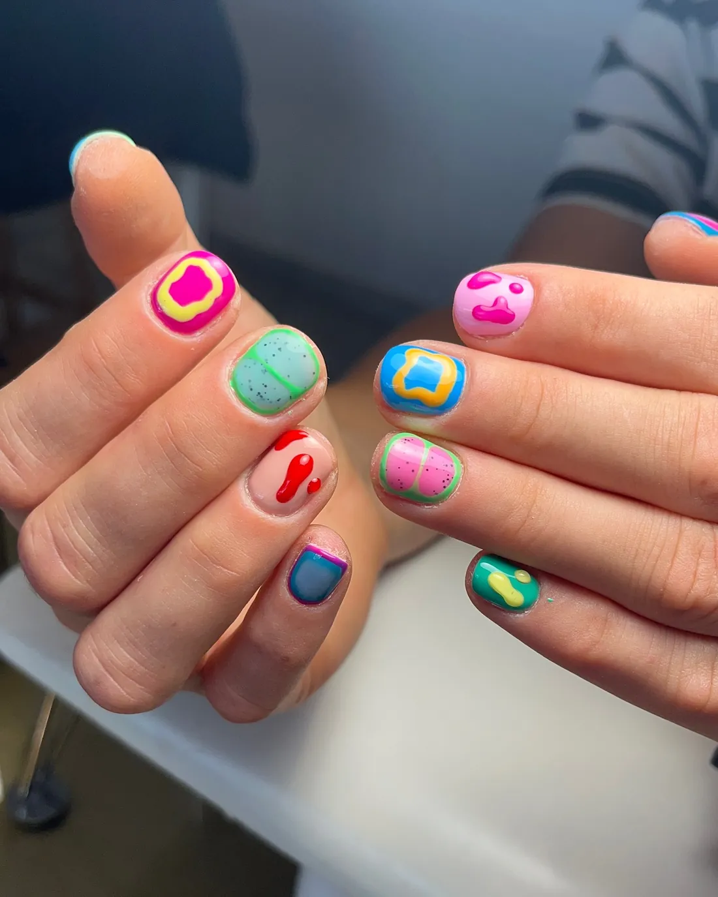
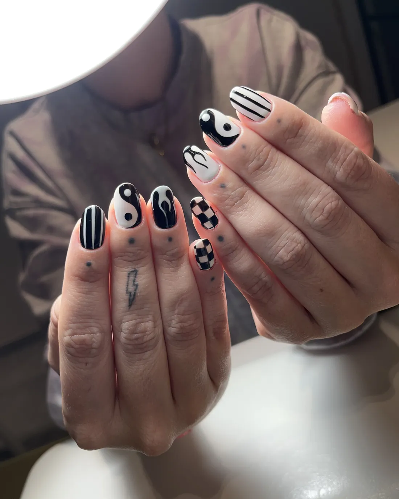
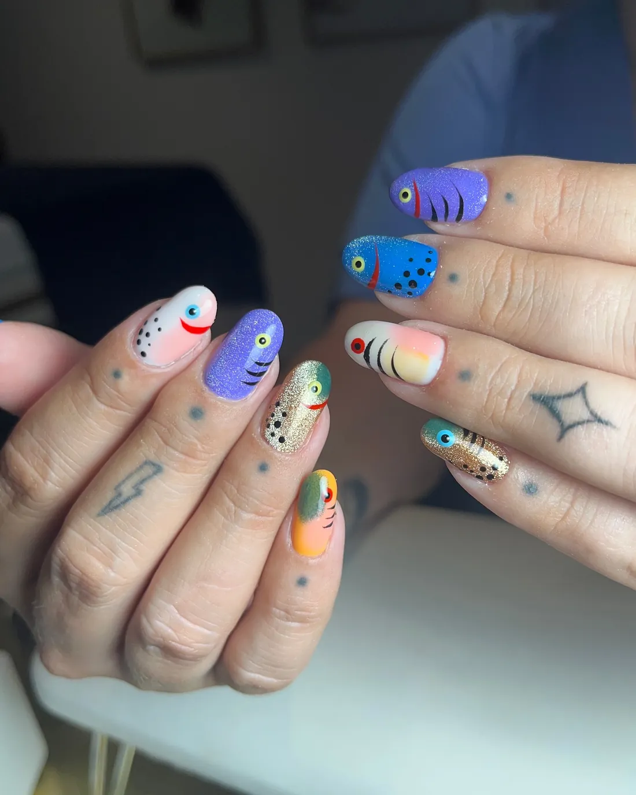
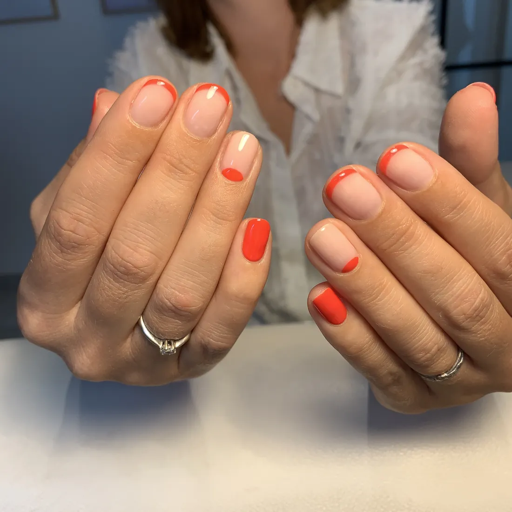
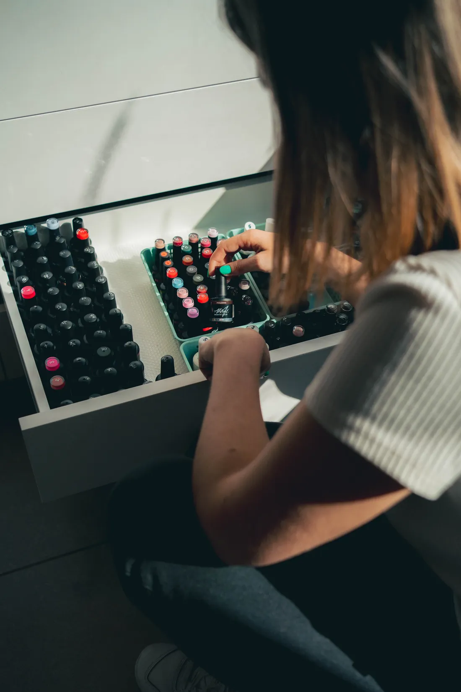
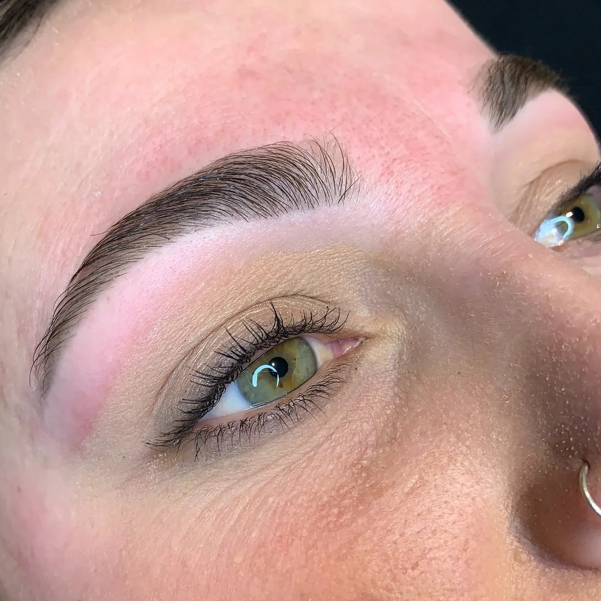
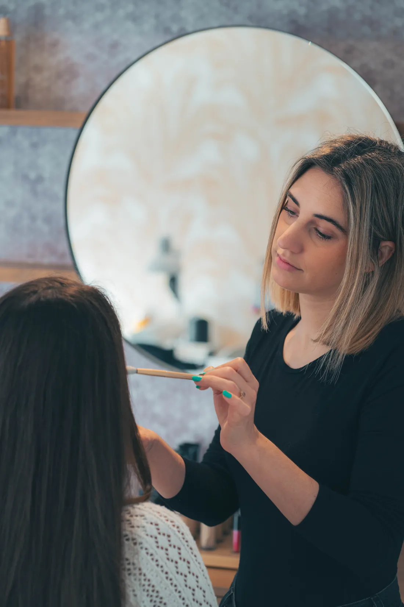
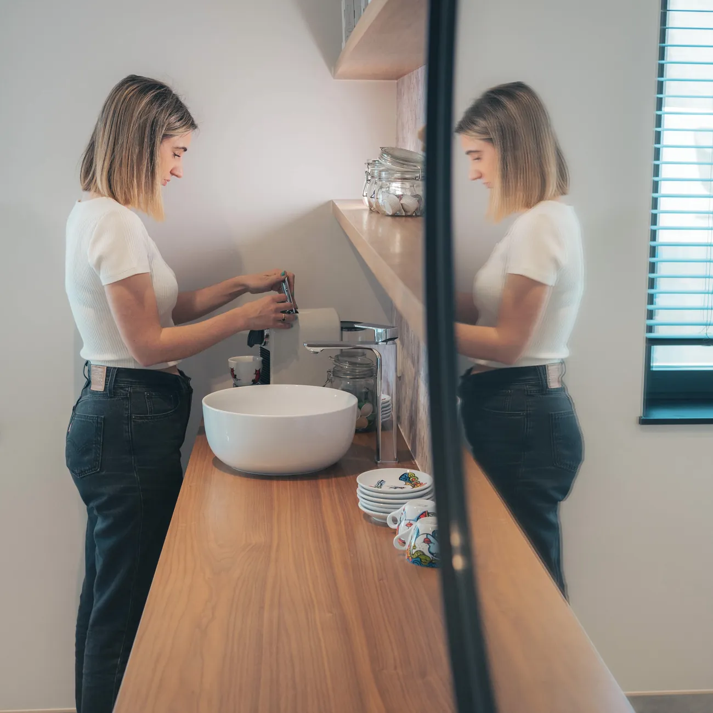

Gel polish
Drie laagjes: basecoat, kleur en topcoat. Voor wie korte, verzorgde nagels wil en van nature sterke nagels heeft.
- Houdt
- 2 tot 3 weken
- Verlengen
- nee
- Kleur
- € 40
- French
- € 45
vanaf€ 40

Ik ben Lisa. In mijn studio aan huis zet ik gelnagels, BIAB en gel polish, verzorg ik wenkbrauwen en doe ik make-up, ook voor bruiden. Ik doe niet alles. Wel wat ik goed kan, en dat heel nauwkeurig.
Rustig en naturel, of net helemaal uit de bol. Een greep uit wat de voorbije maanden de studio buitenging.






Het verschil in het kort. Twijfel je nog, stuur me dan gerust een berichtje.
Drie laagjes: basecoat, kleur en topcoat. Voor wie korte, verzorgde nagels wil en van nature sterke nagels heeft.
Het midden tussen gel en gel polish. Soepeler dan gel, steviger dan gel polish. Vooral fijn voor nagelbijters.
Voor lange nagels, broze nagels die wat steun nodig hebben, of als je wil verlengen. Ik werk graag met polygel.
Met de juiste vorm en een beetje kleur kom je al heel ver. Geen permanente make-up nodig.

Bij de Natural Brow Treatment kleur ik je wenkbrauwen met een van vijf tinten en epileer ik ze daarna in vorm. De kleur blijft zo'n tien dagen op de huid en tot zes weken in de haartjes. Ik noteer je kleur en inwerktijd, zodat het de volgende keer nog beter zit.

Bij een bruid ligt de nadruk op de jurk. Daarom houd ik een bruidsmake-up licht en naturel, met een subtiele oogmake-up. Twijfel je, dan is een test aangeraden, maar niet verplicht.

In 2011 stopte ik met mijn hogere studies en begon ik, niets vermoedend, aan een opleiding tot nagelstyliste. Een jaar later volgde ik schoonheidsverzorging, en daar vond ik mijn tweede liefde: wenkbrauwen en make-up.
In 2014 begon ik met een paar meubeltjes en een paar kleurtjes op mijn zolderkamer. Later kochten we een huis, verbouwden het, en kwam er mijn droomstudio. Ik volg nog altijd bijscholingen, zodat ik mee blijf met wat er nieuw is.
"Het was geen liefde op het eerste zicht, maar nagels zijn ondertussen een echte passie en uitlaatklep geworden."Lisa
"Lisa is een krak in haar vak! Ze gaat heel nauwkeurig en perfectionistisch tewerk waardoor ze telkens opnieuw een heel mooi resultaat neerzet."
Daphné Ghillemyn
"Toen ik eerst naar Lisa ging waren mijn nagels broos en braken ze zelfs met gelish af. Nu dankzij Lisa haar ervaring en deskundigheid zijn ze tiptop in orde!"
Hannelore Desmet
"Bij Lisa word je al vanaf aan de voordeur met een brede glimlach & enthousiasme onthaald."
Thalia N.
Letterlijk overgenomen uit reviews op Google.
Ik werk op afspraak. Kies online een moment dat jou past, of stuur me een berichtje als je eerst iets wil vragen.
Twee à drie uur samen aan de spiegel, met hoogstens twee personen. Zo is er tijd voor al je vragen.
Ik maakte deze demo voor jullie om te tonen wat er kan. Na een kort gesprek maak ik er iets veel persoonlijkers van, helemaal naar jullie wens.
Vrijblijvend. Ik kom langs of we bellen.
Op maat, op jullie eigen domein.
Geen voorschot. Jullie betalen pas als alles klaar is.
Hosting, domeinnaam en kleine wijzigingen, zoals nieuwe openingsuren.
Omdat een voorbeeld meer zegt dan een mail. Zo zien jullie meteen wat er kan, en het kost jullie niets.
Nee. Het gesprek is vrijblijvend. Vinden jullie het niks, dan is het daarmee gedaan.
Na ons gesprek staat jullie site binnen 10 tot 14 dagen online.
Zeker. Jullie domeinnaam kan gewoon blijven, de nieuwe site komt in de plaats van de oude.
Nee, dat doe ik op basis van ons gesprek. Eigen foto's zijn mooi meegenomen, maar niet nodig om te starten.